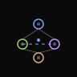
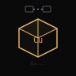
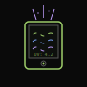

SotoAlt
creative/tech
i like computers, systems and games. trying to create cool stuff and document it.
// now
last updated: 2025-01
- WAWE — building a memory-first multi-agent system. Agents coordinating through a shared SQLite brain. Claude instances spawning in isolated git worktrees. It's getting weird.
- Tellura — tokenizing real copper warrants on-chain. Bridging the gap between physical commodities and DeFi.
- Amiwo — a personal UV and air quality device. nRF52, BLE, and making the invisible visible.
- Reading: The Art of Doing Science and Engineering by Hamming. Thinking about what matters.
// thoughts
- 2026.01 agents as organisms
- 2026.01 invisible infrastructure
- 2026.01 hardware software convergence
- 2026.01 tokenization beyond finance
- 2026.01 terminal as interface
- 2026.01 coordination without control
// experiments
things I've built, broke, or am still figuring out:

wawe
multi-agent orchestration system. Claude instances coordinating through shared memory.

tellura
tokenized copper warrants. bridging physical commodities and DeFi.

amiwo
personal UV and air quality device. nRF52, BLE, making the invisible visible. [wip]
qbots
crypto arena game. robots, stakes, and on-chain mayhem.